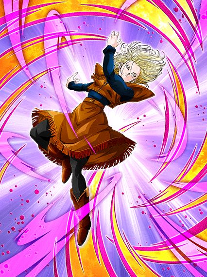
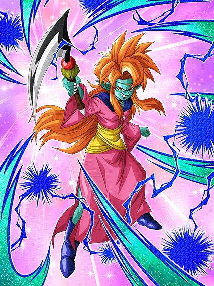
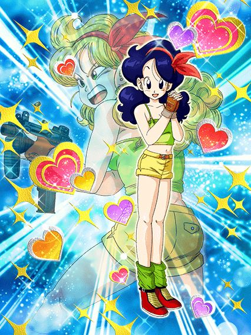
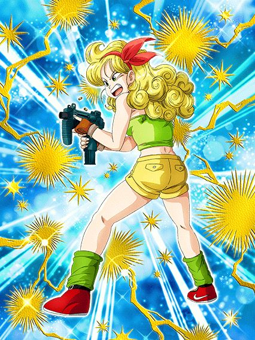

A celebração onde todo mundo esperou o goku god voltar.
Normalmente o halloween é coisa curta, só um banner e um card f2p, nada demais, mas acabaram colocando bastante coisa por causa do global estar tentando apressar o conteúdo pra sincronizar com o jp, oq resultou em umas loucuras mas blz

Eu realmente gosto muito dessa arte.
Essa 18 é não ironicamente um card decente e estiloso, ela tem bastante buffs só de porcentagem, totalizando 360% de ATK e DEF, oq é bem usável até
Ela ainda tem mais 180% de ATK (totalizando 540%) e 48% de chance de desvio se estiver num time peppy gals (ou por algum motivo se estiver contra um inimigo phy) e fica super efetiva por 6 turnos depois de desviar de 1 ataque, oq não é difícil, bem tranquilo na real
No geral esse card é só um card visualmente bonito e não necessariamente forte, ela só tem uma arte muito maneira e animações decentes, mas não sai muito disso.

Pessoa chamada debuffs q não funcionam em mais da metade do jogo:
Esse card tentou muito ser oq a cheelai int foi ano passado, só que infelizmente não rolou dessa vez, já que metade da passiva dela só ativa se o inimigo estiver debuffado
E quando eu digo metade, é sério, se o inimigo não tiver nada ela tem 190% de ATK e acabou (vale mencionar q os stats dela são bem baixos), além de ela perder um crítico garantido e quebrar uma ação do inimigo no turno
No geral, nada muito a se dizer, ela até tem um suporte de ATK pra geral mas só isso não compensa o fato de ela quase não ter defesa, oq torna ela bem mais inútil doq ela já é
Sendo bem honesto, pelo menos a celebração de download trouxe uma luta difícil que pode ser debuffada, mas é só isso q tem e antes da celebração a mamba era praticamente inútil em tudo.
 
O card com intro sem intros existirem.
Esse eza é interessante, mas é extremamente baseado no rng e isso é triste, no geral ela tem dano e crítico por 7 turnos, depois ela fica bem mid mas olha, considerando que todas as lutas difíceis duram pouco tempo, é decente
Ela tem mais crítico se o inimigo tiver selado, oq é bem ehhhhh mas ela no geral é boa pelo menos.
")
...?????????
Isso é um eza por acaso? Eu honestamente não sei.
Ela tem 1 linha de passiva, e todo o resto só ativa se o inimigo tiver debuffado, e nem com tudo ativo ela chega a ser decente, um completo disperdício de eza.
")
Esse card é estranhamente decente..?
Ele tem umas % legais de ATK e DEF, além de ser um suporte de 40% de ATK e DEF pra todos TODOS super class
Ele ganha mais buffs se o inimigo estiver debuffado, mas pelo menos isso não define o card inteiro 💀
Ele tem o INCRÍVEL unit super attack com o paikuhan, q é bem aleatório mas tá ali.
Você chegou ao fim dessa página!
Obrigado por ler tudo, e fica a vontade pra ver outras